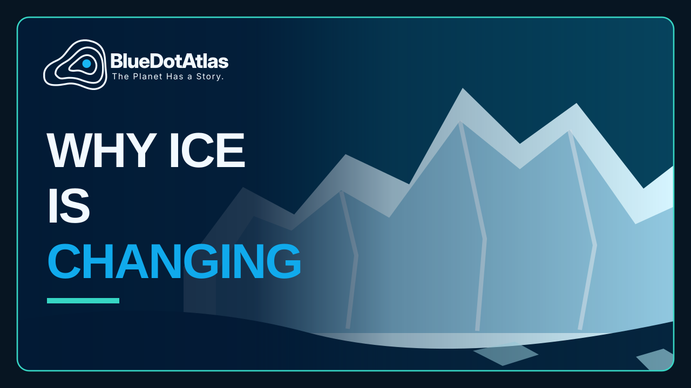
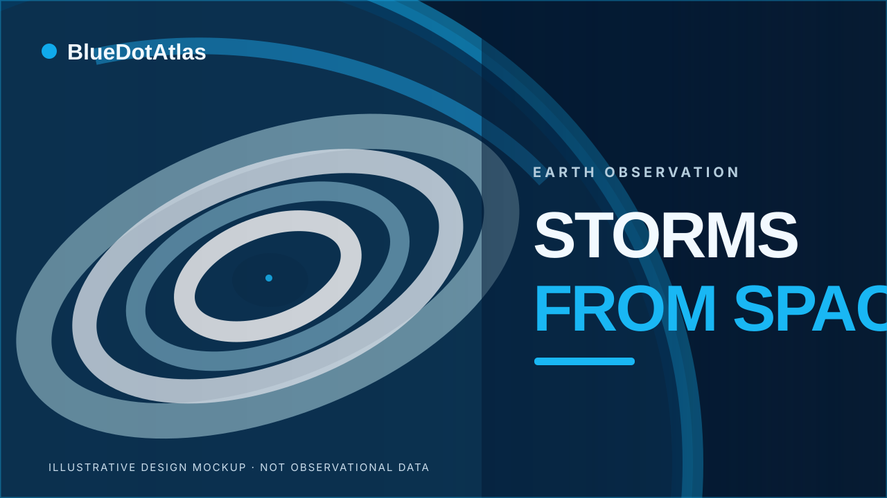
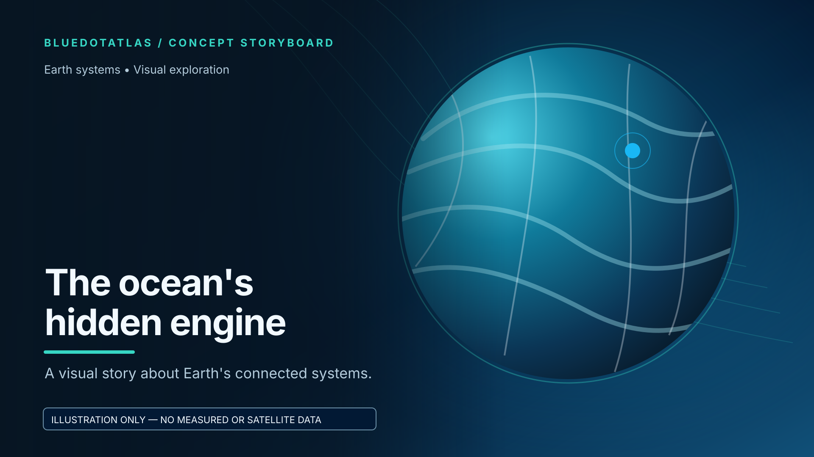

Earth Contour · Direction C
One approved vector geometry, two contrast variants. Name: BlueDotAtlas; public claim: The Planet Has a Story.
Logo construction and usage rules · approved files unchanged.
Brand Kit V0.1 — a side-by-side audit of previously approved assets and one illustrative new storyboard specimen. Overall M00 Brand Gate V0.1 approved by owner (DEC-025). Review the supplied exact originals, not alternative brand concepts.
One approved vector geometry, two contrast variants. Name: BlueDotAtlas; public claim: The Planet Has a Story.
Logo construction and usage rules · approved files unchanged.
Approved palette. UI semantically contrasts in light/dark modes; brighter logo blues are not used as small light-mode text.
Font weights, sizes and SIL OFL notices. The browser uses installed fonts or fallbacks if fonts are unavailable.
Same left-aligned logo/headline and right-side hero placement for every video. These are three thematic specimens, not three templates.



Single approved thumbnail master · Illustrations are not observational photos.
Precise, curious, accessible, evocative — cinematic and serious, never monotonous or sensational.
Already decided: editorial tone and narrative character. Not yet chosen: a specific TTS voice, speaker identity or voice service. Those are later Voice Studio tasks.
Owner-supplied videos retained byte-for-byte. Both visual content transitions cross-dissolve for precisely 0.3s / 9 frames at 30 FPS.
Film background music continues throughout the silent Outro. Interactive Subscribe element is added later in YouTube Studio.
One legible short title and an original abstract sphere, using approved palette and UI type. It is explicitly a fictional layout sample, not measured ocean flow, observed weather, or real satellite imagery. No permanent full-screen explanatory overlay.

Logo, color, fonts, thumbnail and editorial voice character have been accepted in earlier tasks. This gate confirms that the combined V0.1 brand kit is coherent and that the example storyboard is an acceptable visual language. The old 10s test is a technical R&D proof only, never a chosen Intro/Outro. The two owner-supplied videos are definitive. The overall M00 Gate and illustrative storyboard are approved (DEC-025). Historical 10s prototype counts as technical motion-pattern proof only, not a real brand intro or outro.
Read the full decision ledger and open points